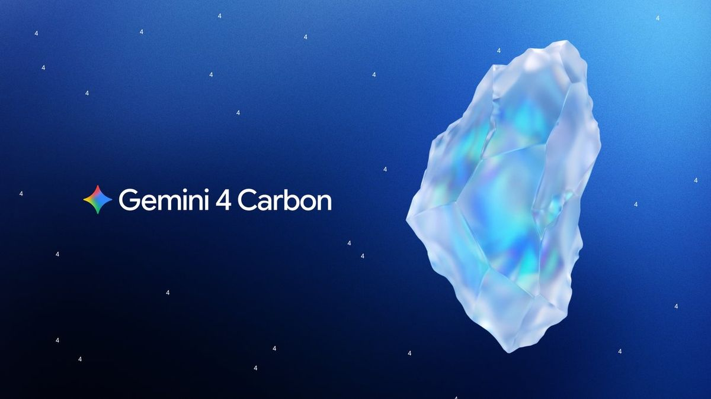
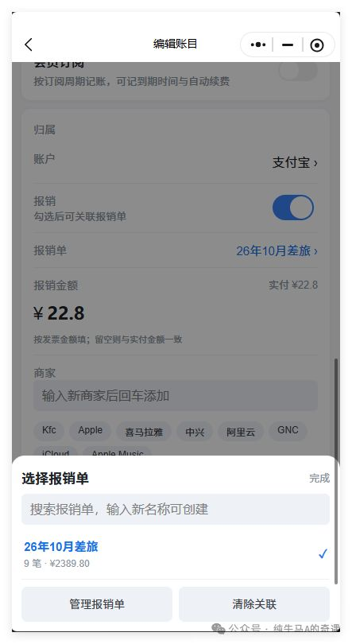
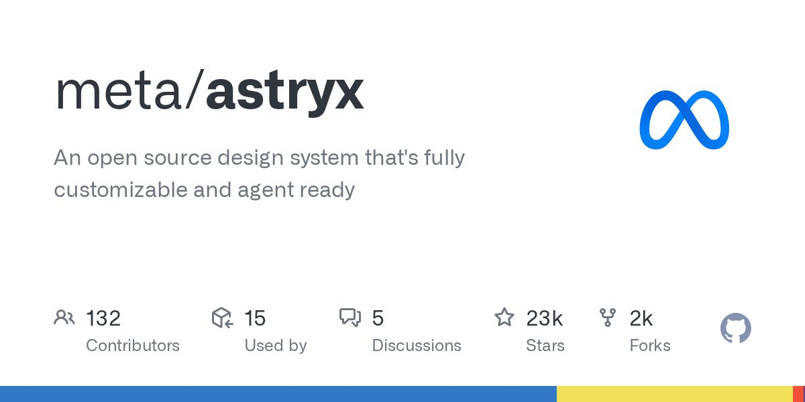

Gemini 4 Carbon 上线。

原文正文要点
Google 称其为目前最强模型，面向长时间 Agent 任务、复杂编程与科研推理；API 价格与 Gemini 4 Argon 相同（每百万 token 输入 $2、输出 $10），并向 Google AI Ultra 订阅用户开放。官方表示多数软件工程与知识工作仍首选 Argon。Google 博客（11-10）
时间窗口：11-10 08:00 到 11-11 08:20（台北时间）。已与前 7 期去重，每条均核对正文与日期。

Google 称其为目前最强模型，面向长时间 Agent 任务、复杂编程与科研推理；API 价格与 Gemini 4 Argon 相同（每百万 token 输入 $2、输出 $10），并向 Google AI Ultra 订阅用户开放。官方表示多数软件工程与知识工作仍首选 Argon。Google 博客（11-10）
商家可通过 Business Hub 认领并维护自己在 ChatGPT 中的信息，查看提及次数、网站点击等汇总数据；美国符合条件的电商与在线服务商家可搭建 Business Agent 与用户对话。OpenAI（11-10 18:00）
11-10 起停止新注册，12-10 转为只读，2027-01-10 关闭其余服务，2027-02-01 开源。公告（11-10）
Notion 称不到 1% 的工作区可能受影响，涉及不带用户与工作区标识的 Notion AI 对话记录，Insights 功能已暂停。Notion 帮助中心（Hacker News 11-10 15:19 上榜）
Sheets 可根据一句描述生成带分页、公式、格式和下拉框的表格，并标出每次编辑，可导出 xlsx 或 CSV；Whiteboards 可把口述计划整理成带负责人与日期的时间线，并转成文档或演示稿。网页、桌面与移动端可用。官方文章（11-10）
用一句描述生成主屏小组件，可从 Gmail、日历和搜索中取数据，例如旅行看板、月度开销或倒计时，未来几周陆续推出。Google 博客（11-11 03:00）
通过 npx cc-clean@latest 精简 Claude Code 与 Codex 的本地会话存储，主要移除以 Base64 保存的图片和冗余字段，作者称不影响恢复会话。V2EX（11-11 02:28）

作者翻阅 1300 多条倒数日 App 的中文差评，发现约五分之一在抱怨广告，于是做了一个不插广告的倒数日 App，Pro 为一次买断。V2EX（11-10 16:11）

作者经常往返北京与桂林，记账时勾选「报销」，月底导出 JSON 交给 AI 整理成报销单，不再逐条翻订票短信。V2EX（11-10 10:18）
一位 WordPress AI 插件开发者称 Anthropic API Key 被他人用掉 $167，超过其设置的 $30 限额，其中一把 Key 从未写进代码，泄漏原因尚未查明。r/ClaudeAI（11-11 02:20）

以下是本期项目及单日新增星数。
一家面向中小企业的 AI 咨询平台招兼职技术负责人，负责阿里云运维、Next.js 与 Python 开发，每周约 12–16 小时，固定月费 4000–5000 元，要求日常使用 AI 编程工具，先做 2–3 天付费试用再签 3 个月。电鸭（11-10 15:37）
使用剪映或达芬奇做去脏点、降噪与防抖处理，按成片时长 20 元/分钟计费。电鸭（11-10 11:01）
63 个工作类别中有 43 个呈现「在 ChatGPT 中常见的任务在 Upwork 上占比下降」的规律；AI 相关项目常把 AI 生成视频、剪辑、动效等任务组合在一起，固定价预算更高、工时更多，时薪与其他项目相近。OpenAI（11-10 15:00）

Cursor Changelog 最新为 11-06；Anthropic News 窗口内无新稿；r/vibecoding RSS 返回空内容；OpenAI 文章页命令行请求返回精简页面，改用网页正文与官方 RSS 核验；Hacker News 搜索接口一次返回 400，修正参数后核验。